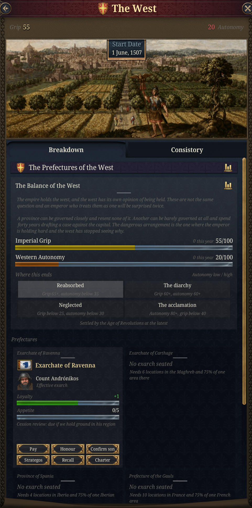

Dev Diary: Rhomania
Published: 2026-08-19
A Byzantine empire that is allowed to stay Greek, a Rome it governs without moving to, a reconquest that costs what reconquests cost, and a road east that does not.
Dev Note: this is a standalone submod requiring Fate of the Phoenix. It exists because of one criticism of that pack that we think is correct. Every unique reward in it sits on the Latin side of the Latinitas/Rhomanismos slider, and the only route to the Roman tag force-moves your capital to Rome. A Greek-speaking Orthodox empire in 1337 is therefore mechanically pushed toward re-Latinising itself and abandoning Constantinople, which has no basis in the period. Rhomania answers that by making the Greek path pay, by building a Rome you govern from Constantinople, and by attaching the historical costs to the things that historically cost.

The second axis
Fate of the Phoenix gives Byzantium one societal value: how Latin or how Greek it is. That is a real question, but it is an outward-facing one, and it leaves the empire's internal politics unmodelled.
Taxis against Dynatoi is the other question. Taxis is order: the fisc, the bureaux, the salaried official, the crown. Dynatoi are the powerful: provincial magnates, pronoia-holders, the families who supply the soldiers and expect to be consulted. This was the genuine fault line of the fourteenth-century empire and it decided more than the language question did.
Taxis buys you bureaucratic efficiency, crown power, cabinet efficiency and tax, and costs you manpower and the goodwill of the nobility. Dynatoi buys manpower, levies, cheaper subjects and noble satisfaction, and costs you the treasury's ability to assess anything. Neither is the correct answer.
Crossing the two axes gives four distinct endgames: a westernised administrative empire, a Latin-feudal Romania, the restored bureaucratic autokratoria, and a magnate confederation with an emperor on top of it.
The Greek side now also has something to unlock. A parallel advance line answers the Latin `rom_*` advances point for point, and the tagmata give the Greek player a heavy infantry line to set against the legionaries. Both are gated on the Rhomanismos side of the slider, so pushing Latin genuinely costs you access to them rather than merely being flavoured differently.
Rome, without moving to Rome
The Renovatio track is the centrepiece. You appoint an exarch: a named character from your court, given a seat in the recovered west and one of three terms of appointment, governing as your subject while your capital stays where the empire actually is.
There are four seats, one for each of the late-Roman praetorian prefectures: Ravenna in Italy, Carthage in Africa, Spania on the Iberian coast, and the Gauls on the Rhone. One exarch per region, no more. Only Ravenna and Carthage were ever really exarchates, and Gaul was never recovered by the eastern empire at all, but the prefectures themselves are real administrative units of the empire this one claims to continue, which is why the four countries are named for those rather than for offices that mostly did not exist.
You do not have to know the feature exists to find it. Once enough of any of the four regions is in imperial hands, the officials administering it by dispatch write to say they are drowning: they are settling quarrels between Italian lords on evidence three months old, in a legal tradition none of them has studied, and they are doing it badly. The event proposes a solution and nominates a man from your own council to carry it out. The three answers are the three terms of appointment, so the choice that opens the arc is the same choice the interaction offers, made under pressure and about a specific person.


The exarchate is not a decoration. It is the oldest problem the empire has, restated: a competent official, in a rich city, a very long way from the palace. The friction thread runs across a reign and more. He makes a decision without asking, and it is a good decision. His court adopts Latin usage, because he was sent to govern Rome and he is governing Rome. He corresponds with Venice and Genoa, because a governor who does not talk to his neighbours learns everything six months late.
Then you summon him home, and find out what you built.
The endings range from a hereditary exarchal dynasty that outlives the emperor who created it, to a fully absorbed province administered by salaried officials who expect another posting afterwards. Which one you get is decided by an accumulated loyalty score, not by a final choice, and the score has been moving since the appointment.
Running alongside all of that, and tracked separately, is what he wants. Any ground in his own province that you still hold directly is ground the exarch can make a case for, and his case is usually a good one: the districts border his own, they are administered at six weeks' remove by men who have never seen them, and their revenue barely covers the cost of collecting it. He is never asking for anything you are making money on.
Refusing is the default and costs you standing with him rather than gold. The better answers are gated on your ruler or on your cabinet, which is the point: a mediocre emperor with a charismatic negotiator at council can still make a refusal land as policy rather than a snub, and an administrator can construct the arrangement where the exarch gets the revenue and the crown keeps the authority. Appetite is deliberately not the same number as loyalty. He can be perfectly loyal and still want the Romagna.
Refuse the formal case often enough and he stops asking. His officers were already the nearest authority, the garrisons had been his for years, and at some point the local officials simply began reporting to the man who was actually there. You find out from a tax return that does not arrive. The options then are a war at the far end of the Mediterranean you cannot presently fund, or a document, and he has been reasonably confident of that for some time.

Each province fails in its own way, and the shared friction thread cannot say why. Africa is a frontier that never settles: confederations south of the limes that cannot be defeated the way a state is defeated, garrisons years in arrears, and a congregation four days inland following a discipline the capital condemned eight hundred years ago and which has apparently been waiting. Spania is a coastal strip with mountains behind it that cannot feed its own garrison, running on Visigothic law in its own courts, with a neighbour who would rather trade than fight and an assessment every governor has submitted unchanged. Gaul is the one place where the locals have been continuously Roman and do not regard themselves as having been recovered; the delegation from the Provencal cities arrives speaking better Latin than your secretaries and congratulates you on your return.
Holding Rome also means holding a quarrel with the papacy that has no resolution, and the diary is not going to pretend otherwise. Which rite is celebrated. Whether the Pope is a guest, a subject or a hostage. Appointments made without your assent. Excommunication, which costs an Orthodox emperor almost nothing and costs his Catholic-governing exarch a great deal, and the Pope knows it.
The West
Seat your first exarch and a situation opens. It is the hub for everything the prefectures do afterwards, and it exists because four governed provinces at the far end of the Mediterranean are not four separate problems. They are one problem with four sets of correspondence.
Two things are tracked, and they are not two ends of one bar. Imperial grip is how firmly Constantinople actually governs the west. Western autonomy is how much the west decides for itself. Both can be high at once, which is the whole historical interest of the arrangement: Ravenna was at its most effective and its most independent at the same time, because the things that let it hold Italy were the things that let it hold Italy without being told to.

The consistory, and the arithmetic that turns on you
The prefectures form a body: the Praetorian Prefectures of the West, with the emperor at its head and every exarch seated in it. It begins dormant. The provinces are governed; they do not meet. Calling them into session is your decision alone, and an emperor who never makes it never loses a vote.
If you do convene it, votes are weighted:
| | votes | |---|---| | the Augustus | 3 | | the Senior Exarch | 2 | | each other exarch | 1 |
With one prefecture you cannot lose, three against one. With two it is three against three and a tie fails the motion. With three it is three against four, and the west carries.
Nothing about that needs balancing. It turns against you because you succeeded, one province at a time, and the body that outvotes you is the one you summoned.
Four questions
The consistory votes on the four powers a late-Roman prefecture actually exercised. Who the western armies obey. Where the western revenue goes. What is celebrated in the western churches. How a dead prefect is replaced.
The rite is the one that bites. A west that votes itself local usage is a west drifting Latin, and the drift lands on the empire, not on the provinces. Recovering the west in Greek terms is work, and the work is political rather than military. This is the submod's central argument arriving through a door you built yourself.

What you can actually do about it
Seven repeatable actions, available whether or not you play with mission packs enabled. Order a census. Pay the annual donative. Demand the tribute. Send a strategos west. Confirm an exarch's son. Grant a commune its charter. Summon an exarch to the capital.
Six of those are decisions. The seventh is not: whether he comes when called is not yours to decide, and the odds read off a loyalty score the other six have been moving for decades. An emperor who took the tribute twice, never paid the donative and confirmed nobody's son is issuing an order to a man with no reason to obey it. When the summons is refused and nothing happens to him, every governor in the empire notices.
Loyalty also reaches the chamber. A well-treated prefect moderates almost to the point of voting with the capital; a mistreated one nearly doubles his push. The donative is not only about manpower.
The rising
Convene the consistory and you have given four provinces separated by weeks of sailing a way to produce a single document with four seals on it. They could not have done that eighty years ago.
You are told it is coming. Two conditions have to converge for a rising: the west has to be structurally strong, and at least one prefect has to have stopped pretending to be satisfied. Both of those used to be invisible. The panel shows the counters but never says which number matters, and a prefect's loyalty is not displayed anywhere at all.
So the west now reports on itself. The West Is Restive appears on your own modifier list when the two conditions are one step from converging, and it comes with a dispatch explaining what changed: the prefectures have begun corresponding with each other rather than with the capital, settling boundary questions between governors, agreeing grain prices, drafting a joint complaint about the assessment and then not sending it. None of it is improper. The Master of Offices makes that point twice, which is how you know he is worried.
Individual prefects are marked too, in both directions, so you can see which of the four is the problem rather than only that there is one. A Disaffected Prefect is raising men, and it is not the capital he expects to use them for. A Contented Prefect is paid, confirmed, and doing well out of the arrangement.
The warning is not decoration. Paying the arrears in full moves every prefect two points, and dealing privately with the one drafting the letters moves him three, and either can take the west back below the threshold. Ignoring it is also a real answer if the treasury is committed elsewhere.
The rising, when it comes, begins as a procedural objection, because the men making it are lawyers as well as soldiers. The consistory resolves that appointments to the west require the assent of the body, communicates this in the correct form with the correct seals, and cites four precedents of which three are genuine. It resolves nothing about obedience, because it does not have to. The western armies are in their quarters and have been paid, and not by you.
The war that follows is a civil war in the strict sense: the prefects remain your subjects while it is fought. They have not repudiated the empire, they are fighting about who runs it. Winning lets you revoke an appointment rather than conquer a country, which is why reducing a prefecture costs a fraction of what annexing a comparable state would and why nobody else in Europe treats it as their business.
You can also decline the war. Concede the substance and keep the forms, which is cheaper and which the west correctly reads as a victory, or spend heavily to buy the prefects who can be bought and isolate the one who cannot.
How it ends
| | autonomy low | autonomy high | |---|---|---| | grip high | the west reabsorbed | the diarchy | | grip low | the west neglected | the acclamation |
Reabsorption pays best on paper and is the least interesting empire, because it is only reachable by keeping the provinces weak, which means never having got the manpower or the revenue out of them. The diarchy is the one that wants both counters high: a colleague in the west, invested and acclaimed and named in the prayers, governing provinces strong enough to matter. The fourth century tried this and failed because the two halves were rivals from the start. This one gets built by an emperor who recovered the west himself and then declined to pretend he could administer it from the Bosphorus.
The acclamation is the other outcome, and it happens the way it always happens: a parade ground, an army that has not been paid, a general who has been, and the shout going up before anyone has decided to shout it.
The question does not stay open forever. It is settled by the Age of Revolutions one way or another, because that is where the wider mod takes over the business of what a subject is, and two systems answering that at once would contradict each other on the same screen. If the counters have not reached a corner by then, the nearest one is taken. You get told this is coming an age in advance.
The union
Vanilla ships two buttons for the schism, both requiring all five patriarchal seats, both instantaneous. Rhomania replaces that with an arc in four stages, and the shape of it is the historical one.
1. Contacts. Legates and letters. Cheap, deniable, commits nobody. 2. The council. The filioque, the azymes, and then the primacy, which is the article the Latins actually came for. You can concede, hold, or walk out. 3. Promulgation. Read the act in Hagia Sophia and commemorate the Pope by name. 4. Repudiation. Available from the signature onward.

The union of 1439 was negotiated, signed, and then rejected at home. So signing is stage two of four here, not the end, and stage three is where the arc actually resolves. Reception is decided by everything you did from the first legation onward: concessions made at the council, clergy bought rather than persuaded, and terms you had translated a little generously and hoped nobody would check. That last one costs you nothing visible for years, and then costs you two points of resistance at the exact moment the Latin text becomes public.
Three outcomes: the union takes and the west starts sending men and money, it splits the city, or it is refused outright and you hold the costs of both positions with the benefits of neither. That last square is fully reachable. It is where the empire historically ended up.
Repudiation is a legitimate ending rather than a failure state. It restores your standing at home and among the Orthodox powers, and no fleet is coming.
The other emperor
Since 1204 two courts have called their ruler Emperor of the Romans: Constantinople, and the Grand Komnenoi in Trebizond. Neither vanilla nor earlier versions of Rhomania gave Byzantium a way to settle that other than an ordinary war. The Komnenian Question (new in 0.4) is a chain that runs for about a decade and ends in a union of the crowns, an annexation, or a claim to Trebizond's throne.
It opens in one of two ways. A Byzantine player can take the Komnenian Question decision, or the chain can start by itself when the two courts are already in a relationship that makes the question urgent. The decision costs 25 political influence and needs Constantinople, stability above 0, legitimacy of at least 50, no regency, peace, and at least one of five opening conditions. Every condition that holds adds to the starting position:
- Family: Trebizond's ruler is of the emperor's own dynasty. In 1337 this is a live possibility, because Trebizond's queen is Irene Palaiologina, daughter of Andronikos III, and a vanilla event can put her on the throne in 1339.
- Alliance: the two courts are allied or joined by marriage, and Trebizond thinks well of us. They start the game allied.
- Standing: high diplomatic reputation and prestige.
- Hostility: rivalry, enmity, or open dislike in either direction.
- Peril: Trebizond is under a regency, unstable, or fighting someone else.
Two scores track the chain. Accord is the case for a union; Pretext is the case for taking the crown by force. Every choice in the chain moves one or both, and the option tooltips say by how much. The first four conditions favour Accord, hostility favours Pretext, and peril adds a little to each.
Five stages follow at intervals of one to three years. Envoys go out. The Pontic court is worked on with gifts, a marriage between the two houses, letters from the Patriarch, or a party built at court. Trebizond's Turkmen frontier needs help, which can be sent, paid for, or withheld. The question of titles comes up, and the Despot title is the recognised middle position between emperor and governor. Then other courts start bidding for Trebizond themselves. A family entrance unlocks a shortcut at the titles stage that settles it as a family matter and skips the rival suitors.
At the settlement there are three choices:
1. Propose the union. If Trebizond is AI, a roll decides it and the tooltip shows the odds. At low Accord a refusal is the likely result; at full Accord the archontes are more likely to acclaim the emperor outright, which annexes Trebizond, than to settle for a personal union with Byzantium as senior partner. If Trebizond is a human player, they choose whether to accept, and Accord then decides between acclamation and union. 2. Declare the crown a usurpation. This grants Reunify the Pontus, a casus belli against Trebizond that lasts ten years plus half the Pretext score. At the peace table it offers annexation or a cheaper vassal Despotate of the Pontus, and both are discounted by Pretext. 3. Let the question rest. Nothing is gained and nothing is broken.
A refusal is not a dead end. The alliance ends, both courts take an opinion penalty, Trebizond looks for a protector among its neighbours, and Byzantium gets the same casus belli for fifteen years. The chain runs once per campaign. If Trebizond stops existing or becomes someone else's subject partway through, it lapses.
AI Byzantium can run the chain, but more conservatively. It only opens the chain by itself through the friendly entrances, and its odds of union or acclamation at the settlement are halved, so Trebizond survives in most games where Byzantium is not the player.
The No Second Emperor mission task now completes when Trebizond is our subject (other than a tributary) or our junior partner in a union, as well as when it no longer exists.
A Latin marriage
The Latin Bride mission task now asks for more than any royal marriage with a Catholic court. Our ruler or heir must be married to the ruler or heir of a Catholic great power, so the children of the marriage stand in line for two crowns. Completing it opens The Latin Empress (new in 0.4), a chain of about a decade with that court as the partner.
The chain has two branches, depending on which way the bride travelled. If their princess came to Constantinople, the questions are the ones the Komnenian emperors faced: whether she takes an Orthodox name or keeps a Latin chapel in the palace, and what to do with the company of knights her family sends. The knights are cheap at first. Five to eight years later their captain presents the account, and an emperor who will not pay finds out what the Catalans did in Thrace. If our princess went west instead, the first question is whether she joins the Roman Church, and the second is what she takes with her: scholars and manuscripts, the ceremonial of the Sacred Palace, or a habit of writing home that the palace reads as intelligence.
Both branches then share three stages: the in-laws' merchants asking for a quarter and the terms Venice got in 1082, a letter from the Pope that reads where the union arc stands, and a crusade proposal against the strongest Muslim neighbour. The crusade waits while either court is at war. Choices build a bond score, and the settlement ten years on is tiered by it.
The chain closes early if the partner stops being a Catholic great power, goes to war with us, or if the couple die or leave the line of succession. It does not create a union of crowns itself. If the couple's line inherits both thrones, vanilla's succession rules do that.
Venice
Venice was a Roman province before it was a republic. Its first doges held their title from Constantinople, St Mark's was built on the plan of a Constantinopolitan church, and in 1204 Venice sacked the city. The Venetian Alliance task used to be a gold reward and a naval modifier. It now opens The Serenissima Question (new in 0.4), ten stages over about fifty years.
The stages follow the late medieval relationship: renewing or revoking the 1082 customs exemption, Venetian loans and the crown jewels still in pawn, the Genoese war of 1351, a sea league against the Turks, Hungary pressing on Dalmatia, and the Venetian push onto the mainland. If an exarch governs Italy, that question is his, and restraining him costs his loyalty. One stage offers to buy back a Venetian port in the Morea or the Aegean, or trade rights in our markets for it. Another sets the doge's old ducal title against a vicariate from the western emperor. Genoa is the alternative partner throughout, and siding with it costs ground with Venice.
Two scores decide the ending. Concord is how far Venice trusts us; Leverage is which of us needs the other more. At the top, Venice can become the Ducate of Venetia, a light subject that keeps its republic, fleet, colonies and wars, pays a small tribute, lets our merchants trade free of its tariffs, and cannot be annexed. Below that is a perpetual alliance, then a plain friendship. At the bottom is a rupture and a war claim on the Stato da Mar ports. Both of the good endings can also keep Venice out of the Holy Roman Empire, using vanilla's own block on joining it. A human Venice decides the port deal and the final proposal for itself.
The Academy
The Academy Reopened task now needs five universities as well as Constantinople or Athens, and opens a chain of six stages over six to ten years (new in 0.4). Three parties want the appointment: the Latinophrones who read Aquinas in Demetrios Kydones' translation, the Palamite monks, and Gemistos Plethon's circle from Mistra. Choices then decide which faculties open, what the library translates, how to answer the Patriarch, and whether one of your Court Ledger schools takes part in a public disputation. Ministers with scholarly, legal, military or theological traits open extra options at each stage.
The chain ends in a charter. You get one pick, plus one if the Church was reconciled and one if your school won the disputation. Each reward was unlocked by an earlier choice and some have their own requirement:
- Imperial Academy: a new policy for Elite Education.
- Literate Universities: higher literacy caps for nobles and burghers at every university you own, including ones built later.
- Western Learning: faster institution growth at every university.
- The Tactica Taught: military tactics scaling with your university count, up to 20.
- Faculty of Law and Faculty of Theology: country modifiers. The theology faculty's character depends on who won the Academy.
The winning party also pulls the Latinitas/Rhomanismos slider for twenty years. The task used to raise the question of the old gods on completion. Now only an Academy that Plethon's circle won does that.
Bureaucracies, and what funding them means
The eleven Byzantine bureaucracies are now assigned to the Taxis/Dynatoi axis, so what you fund shapes what your state becomes. The bureaux that govern around the magnates drift you toward Taxis; the ones that govern through them drift you toward Dynatoi.
Three new offices compete for slots: the Genikon (the general fisc), the Epi tōn Deēseōn (the master of petitions, through which a farmer in Thrace can appeal past the man who owns his valley), and the Oikeioi (household intimates handed provincial commands on personal favour). The last two are mutually exclusive, because a subject either appeals to a public office or he asks a man who knows the emperor, and running both means the formal channel exists and everyone knows it is not the real one.

Two numbers describe every office and the interesting content is in how they combine. A funded, entrenched bureau is a pillar of the state. An unfunded, entrenched one is a fiefdom, and vanilla names that outcome itself. A brand new unfunded office is close to harmless, because nobody has had time to build anything out of it yet, and the malus scaling here is deliberately softened at low entrenchment to make that true.
Underneath it all runs a venality score. It rises whenever an office is treated as property rather than a post, and it gates the nastier events. Exactly one thing brings it back down: paying the arrears in full, which costs several years of a small realm's income and is the only reason the score is a decision rather than a countdown.
The bill arrives later
The salaries fall behind. You can pay them, retrench honestly if your ruler is a capable administrator, or let the offices find their own income, and everyone understands what the third one means.
Choose it and nothing much happens. Twelve years later a delegation of clerks comes to the palace to ask, with great respect, that the arrangement be regularised. They are not asking permission. They want a schedule of rates, because the current uncertainty is bad for everyone, and by now the charges are known the way the price of bread is known: not secret, not irregular, not written down anywhere, and a clerk who did not levy them would be regarded by his colleagues as a man making a point.
You can repeal it, which is expensive and hated by everyone who has built a life on it and does actually work. You can tax the fees instead, and the treasury takes its share of an abuse it has stopped pretending to disapprove of. Or you can say nothing, and the custom hardens.
A funding cut announced and then not explained runs the same way. Ten years on the office still answers letters, and answers them accurately. What has changed is that it answers them in an order: a request from a family with a relative in the service moves, a stranger's waits, and there is no rule about this and nobody who could be shown to have decided it. The men who could have been asked left when the salaries stopped. The cut took an afternoon; undoing it is a project of years, and the emperor who ordered it is dead.
Selling an office outright is the one decision in the thread that cannot be walked back. There is no later event that unwinds a sale.
Debt
Constantinople borrowed from Italians, and what it cost was not the interest.
Four threads. Italian creditor leverage is the spine of it: the money is available, the rate is reasonable, and it becomes more reasonable still with certain small accommodations regarding the customs, mentioned late in the conversation by men who rehearsed it. The score that matters is not how much you owe but how much you have conceded. You can be deep in debt with a creditor grip of zero, and that is a legitimate way to play the thread.
Tax farming sells next year's revenue for money today, and the collectors answer to nobody in the palace. Default offers renegotiation at their rate, or a lower rate with their factor resident in your capital reading your registers, which is the offer they want you to take. And repudiation, which the republics answer by doing something they have never otherwise managed, which is agreeing with each other.
The fourth thread reads a piece of vanilla rather than replacing it. Fate of the Phoenix already ships the pawning of the crown jewels to Venice in 1343, and it is good content, so Rhomania does not rebuild it. Instead it picks up what happens next: a coronation conducted with gilt and coloured glass, clergy who notice, and a clerk three reigns later copying the regalia forward on the schedule of pledged property in a hand the chancery no longer uses.
The reconquest, and what it costs
Justinian recovered Africa, Italy and a strip of Spain. The plague came with the fleet, the treasury never recovered, and Italy was ruined by the war fought to save it.

Nine cornerstones carry the campaign: Illyricum, Italy, Africa, Spania and Mare Nostrum in the west, then the Red Sea, the Horn, India and the spice islands in the east. Each western theatre fails differently and none of them fails on the map. Illyricum is won and then populated by people who were never consulted and will outlast every arrangement you make. Italy is recovered as a ruin. Africa is rich, and never settles, and its garrisons go years without pay. Spania is the cheapest to take and the hardest to justify keeping, and its garrison commander has submitted a professionally worded assessment concluding that the position is untenable in any circumstance where it matters.
The other seventy-seven tasks are the empire the reconquest is launched from.
The house before the campaign
Five opening tasks need no wars at all: hold the Theodosian Walls for a decade, keep the Hippodrome, seat five men on the council, run two bureaus at full maintenance, hold a working shipyard.
The walls are the only timed task in the tree, and they are timed for a reason. Byzantium owns them at the start date, so "maintain the Theodosian Walls" was a task you completed before unpausing and could then demolish. Ten years is the answer.
Then the tree splits into three pillars you can pursue in any order. The Fisc restores the nomisma, the silk looms and a literate administration, ending with the Logothete of the Course, the office that ran the post and the roads and eventually the foreign policy because it was the only one that knew what was happening. The Faith runs through Athos, the icons and leadership of the autocephalous churches to the Ecumenical Throne. The Sword goes veterans, dromons and the Varangian Guard to a restored field army, and the Varangians bring a casus belli on the old Balkan frontier with them, which is the earliest one in the submod.
You only need two of the three. No emperor was ever strong in every respect at once, and the tree does not ask you to be. Neglecting a pillar entirely is a legitimate way to play.

The tree also stopped being a fan. One task, The State Restored, used to open twelve at once, which made the third rank unreadable. Gateways now sit in front of each cluster, and no node in the tree opens more than four things. Two of them, the Roman Title and the Latin Powers, follow The State Restored. The other two do not wait for it: the Anatolian Return opens off the Walls and the Balkan Frontier off Thessaloniki, so the Ottomans, the Themes, the Bulgarian and Serbian questions, the Danube and the question of Trebizond's emperor can be pursued alongside the pillars. Gating them behind The State Restored let a player conquer for a century before the tree caught up. Anatolia Secured, the Levant beyond it and the western reconquest still wait for the restored state.
Choices that close doors
Five points in the tree offer two roads and let you walk one. Take the Venetian Alliance and the Genoese Compact disappears. End the Ottomans, or make them your tributary, which is the historically ironic answer and considerably cheaper, since the empire spent decades paying them tribute and sending troops on their campaigns. Restore the Tagmata as a salaried professional army, or raise the Pronoia Host from men who bring soldiers with them, which is the Taxis and Dynatoi argument settled with regiments instead of offices. Settle the Levant by treaty with Cairo or fight the Pentarchy War. Run the spice as a crown monopoly or charter a company.
The road not taken vanishes from the tree, so each fork's description names what it closes. That is the only place the information can live once the alternative is gone.

The west, unlocked
Illyricum opens Italy, Africa and Spania as three independent lines, takeable in whatever order the map offers, reconverging at the Western Sea once any two are done. This is a correction as much as a feature: the previous chain forced Italy before Africa, which forbade the order Justinian actually used. He took Africa in 533 and Italy afterwards, and the sequence was opportunity rather than plan.
Alongside all of it sit eleven optional spurs that gate nothing, and they now sit with the regions they belong to rather than clustered at the roots. A porphyrogenitus heir. The Danube reached. The union with Rome received at home. The akritai settled on the frontier they hold. The pilgrim road from Jaffa to Jerusalem, which is where custody of the holy places turns into revenue. Maintain Hagia Sophia, furnish the Great Palace and bring Thessaloniki properly under control, and an optional capstone recognises a city worth looking at. Hold a triumph in the Hippodrome, using forms recorded in the ceremonial books and not performed in two hundred years.
And Greek fire, which is no longer a minor spur. Vanilla gates four unit types behind a variable reachable only through a five-percent monthly event that also wants an idle scientist and then flips a coin with no bound on how often it can fail; a campaign can end without ever seeing it. Here it is a three-event chain with three ways in: the court's own scientists, the monastic archives, or a captured engineer who has actually built a siphon. Whichever route you take, something gets out to the Italians or it does not, and you are not asked about it. It is available whether or not you have mission packs on.
And what it costs
Every theatre raises strain. Strain rises further with unintegrated conquests, with fighting while already holding two theatres, and with borrowing at war; it falls with peace and with integration. Past the thresholds the provinces stop remitting, a permanent western army assembles that nobody decided to create, and a general appears who has done everything asked of him and rather more, which is the problem.
One thing to be clear about. Mission packs are off by default in EU5, and the nine cornerstones are delivered as ordinary actions for everyone playing that way, calling exactly the same code. Greek fire is the tenth, for the same reason: it unlocks units, and hiding that behind a disabled-by-default rule would hide it from most people. The other seventy-six tasks are not. They exist only with mission packs enabled.
That is deliberate rather than an oversight. Seventy-six more entries in the action panel would bury the ten that matter. Nothing structural is behind them: the theatres, their permanent modifiers and every event chain are reachable either way. Turning missions on gets you the scaffolding, the forks and the small rewards, not the content.
The Levant
Once Anatolia is settled, a two-phase confrontation with Cairo opens over the holy places.
Phase one is a cold war and it is fully resolvable by diplomacy. A written condominium over the custody of the Holy Sepulchre is a real ending, several emperors thought it the best available one, and you can reach it without declaring war. Five threads run in parallel: the holy places, the eastern patriarchs, the spice trade and the republics selling to both sides, the frontier, and Cairo's own succession disputes, which move the situation whether or not you do anything about them.
Phase two is the Pentarchy War, and it escalates only if you press for it. Jerusalem, Antioch and Alexandria are three of the five ancient sees. Take them, with Rome already under your exarch, and you hold all five for the first time since the seventh century, which makes vanilla's `mend_schism` available on your terms.


Past Suez
Take Alexandria, Cairo and the Sinai together and something changes that has nothing to do with the pentarchy. For the first time since Justinian the empire controls the entire passage between the Indian Ocean and the Mediterranean.
The spice does not come from Cairo. It comes through Cairo, from ports the empire has never seen, carried in ships it does not own, and for two centuries the men growing rich on that have been the sultan's customs officials at one end and the Venetians at the other. Both of those positions are now available.
The eastern branch grows out of the Levant spine rather than running beside it. Antioch, then Jerusalem, then Egypt and the Delta, then the Sinai Road, and the Sinai Road is the hinge: hold it and the tree opens the Red Sea strait, then victualling stations on the Horn, then factories on the Malabar coast, then the islands where the spice actually grows. The road east begins where the reconquest actually reaches it. All four eastern cornerstones have their own actions for players with missions off, exactly like the west.
It is a genuinely different kind of expansion and the mechanics say so. The reconquest is territory: armies, garrisons, provinces that cost more than they return, and strain to price all of it. The east is trade. It needs ships rather than soldiers, it pays for itself, and reaching the spice islands costs no strain at all. What it costs instead is Italy. Venice and Genoa have been the middlemen on this route since before the empire lost Anatolia, and they are about to stop being, and an emperor who spent the debt threads carefully keeping his creditors sweet will find that bill arrives in a currency the map does not show.
The choices along the way are about what kind of power you intend to be out there. Tax the strait and let everyone use it, or close it to Latin shipping. Build the African stations properly, or come to terms with the harbour masters who already run them. On the Malabar coast the Indian Ocean has been running an orderly international trade for a thousand years, in which foreign merchants live in a designated quarter, pay local dues and settle disputes in local courts. Arabs, Persians and Chinese have grown wealthy on those terms for centuries. Several of your factors find them beneath the dignity of the Roman Empire. The ones who have been out there longest are the ones arguing hardest to accept them.


One caveat worth stating, since it is a real limitation rather than a design choice: a mission pack can have only one completing task, and in this tree that is Mare Nostrum. The eastern line cannot finish the pack by itself. It ends in its own payoff instead, where you decide whether the trade runs as a crown monopoly, gets farmed to the burghers who then no longer need Italian credit, or is sold back to the republics at your price.
Playing well with the rest of the map
An exarchate is a new country appearing in Italy in the middle of somebody else's century, so a fair amount of this submod is about not breaking things.
Vanilla enrols the Guelph and Ghibelline factions once, at the situation's start, so a later-created exarchate would see the whole quarrel and be unable to touch it. Rhomania offers an explicit three-way choice instead: join the Ghibellines, which for an eastern emperor's governor is the more interesting reading; join the Guelphs, since you hold the Pope's city; or stand apart as a third imperial party and forfeit any say in how it ends.
The larger hazard is the Western Schism. Its start conditions require the Papal States to exist with cardinals between 1360 and 1402, so annexing them before 1360 does not delay that situation, it deletes it. There is now a guard event that fires when the papacy is one step from erasure, offering subjugation as the better-paying alternative and weighting the AI heavily toward taking it. It does not forbid anything. If you erase the papacy anyway there is a substitute thread covering a western church with no head and three kings offering to host an election.
The Italian Wars needed nothing. Vanilla already selects a Constantinople-holding Balkan Christian power as the Balkan league leader, which is you, by construction.
One thing worth stating plainly: vanilla's `restore_rome_primacy` action relocates your capital to Rome. That is a legitimate path and Rhomania does not block it, but it will disable the exarchate track and every Renovatio advance, all of which require you to still be in Constantinople. Pick one.
Rhomania is a standalone submod. It requires the Fate of the Phoenix DLC and does not depend on the main Flavorium Universalis mod. It overrides no vanilla file except the eleven Byzantine bureaucracies, which are redefined to add axis drift and entrenchment-scaled maluses; the header of that file lists every change. Known incompatibility: Basileia Romaion: 1337, which replaces the campaign setup and overrides cultures.